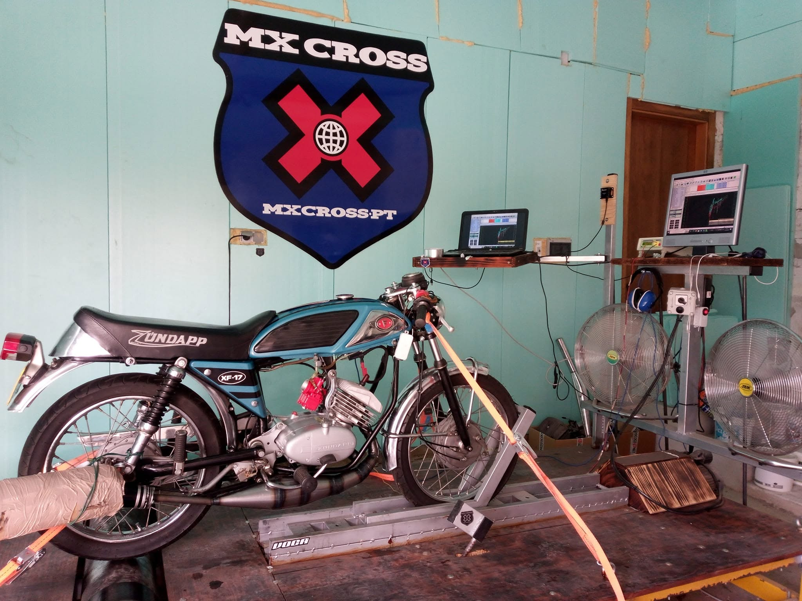
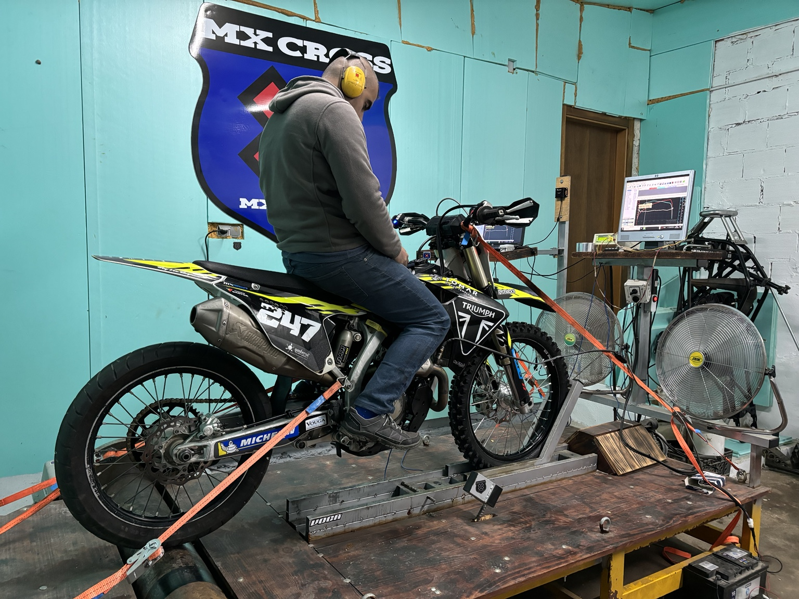

Feito para rebentar limites
Banco de potência para motos até 70 CV, preparação, soldadura, maquinação, 4x4 e fabrico técnico à medida.
Entra diretamente no que procuras.
Uma estrutura mais profissional e fácil para o cliente: primeiro conhece a MXCross.pt e depois entra na área que lhe interessa.

Banco de potência para motos até 70 CV
Testa a tua mota, mede potência e binário e percebe o efeito real das alterações.
Precisas de alguma coisa?
Marca um teste, pede orçamento ou envia fotografias pelo WhatsApp.
Sem complicar.
Fazem banco de potência?
Sim. Para motos até 70 CV.
Fazem escapes para Jeeps e carros?
Sim. Fabricamos e adaptamos escapes à medida para Jeeps, 4x4, carros e motos.
Trabalham inox e alumínio?
Sim. Fazemos soldadura TIG e trabalhos técnicos em inox, alumínio e aço.
Fazem peças à medida?
Sim. Podemos fabricar flanges, casquilhos, adaptadores, suportes e outras peças técnicas.
Opiniões reais, quando existirem.
Não inventámos testemunhos. Esta área fica preparada para adicionarmos avaliações reais de clientes.
Banco de potência em ação.
Conteúdo real da oficina, sem carregar vídeos automaticamente na página inicial.
Ver vídeos e testes
▶